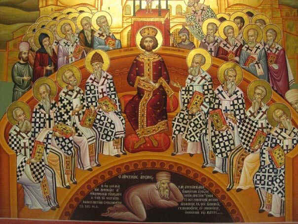

مجمع نيقية هو المجمع المسكونى الأول وكان بسبب بدعة آريوس الهرطوقى وذلك بأن كتب البابا الكسندروس إلى الملك قطسنطنين الكبير يطلب منه عقد مجمع مسكونى للبت فى هذه البدعة. وطلب ذلك أيضاً من الملك أوسيوس أسقف قرطيه.
فوافق قسطنطين على عقد مجمع مسكونى وأرسل منشوراً لجميع الأساقفة فى المملكة ليستدعهيم فى مدينة نيقيه التى تقع فى ولاية بيثينيه ، فذهب 318 أسقفاً من كل العالم المسيحى وكان حاضر معهم البابا الكسندروس وكان البابا الوحيد فى ذلك الوقت وكان هو المدعى ضد آريوس.
وكان مع البابا شماساً أسمه اثناسيوس رئيس شمامسة وكان سكرتير البابا الخاص ولم يتجاوز من العمر 25 سنة وكان وجهه كالملائكة كقول القديس غريغوريوس النزينزى وكان من الحاضرين الأنبا بوتامون أسقف هرقليه بأعلى النيل والقديس بفنوتيوس أسقف طيبه وكان عن ممثلى الشرق 210 أسقفا وممثلى الغرب 8 أسقفاً.

وحضر آريوس وأتباعه وهم أوسابيوس أسقف وميديا ، وثاؤغنس مطران نيقيه ، ومارس أسقف خلقدونية ومعهم عشرة فلاسفة وأجتمع مجمع نيقية سنة 325 م والقى الملك خطابه باللاتينيه ثم بعد ذلك دارت المناقشات من 20 مايو حتى 14 يونيه عندما حضر الملك ووضع قانون الإيمان فى 19 يونيه ، وختم مجمع نيقية أعماله فى 25 أغسطس.
وكان من أهم البارزين فى مجمع نيقية أثناسيوس شماس البابا الكسندروس الذى تولى الدفاع عن لاهوت السيد المسيح حجج آريوس الهرطوقى وقد أظهر براعته فى إفحام الآريوسين وعندما لم يجد الآريوسين حجه فى اثناسيوس اعترضوا على وجودهه كشماس فى وسطهم إلا أن الملك لم يسمع لهم وأمر على وجوده لعلمه وقوة حكمته فى الرد على آريوس.
الجلسة الأولى
عقدت هذه الجلسة وكثر فيها الجدال والغضب لأن الملك قد أعطى الحرية لكل من يتكلم فانقضت الجلسة الأولى وانقضت بدون جدوه. وفى اليوم التالى تقدموا للمناقشة فوقف آريوس وشرح بدعته وقال :
” أن الابن ليس مساويا للآب فى الأزلية وليس من جوهره وأن الآب كان فى الأصل وحيدا فأخرج الأبن من العادم بإرادته وأن الآب لا يرى ولا يكيف حتى للابن لأن الذى له بداية لا يعرف الأزلى وأن الأبن إله لحصوله على لاهوت مكتسب “
فحدث ضجيجا عاليا وسدوا أذنهم لكى لا يسمعوا هذا التجديف ، وقال بعض الأناشيد والأغانى التى تتكلم على هذه البدعة وعندما حاول آريوس الدفع عن هذه البدعة ببعض آيات من الكتاب المقدس ليؤيد بها بدعته وقف أمامه اثناسيوس وأفحمه بردود قويه جعلت الكل فرحين بهذا الشماس العملاق فى ردوده والآيات القوية التى أستند عليها وتوجد صورة هذه الردود بمكتبة البطريركية القبطية واقترح اثناسيوس أن تضاف كلمة ” ذو جوهر واحد “